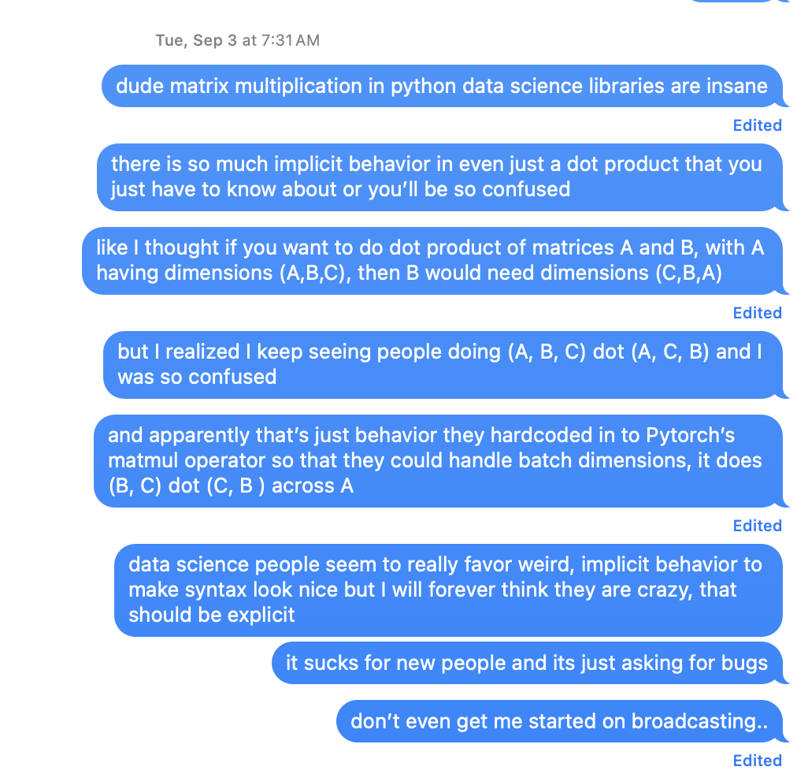

Introduction
In a recent project, I compared output from HuggingFace’s Candle with PyTorch equivalents to make sure that embeddings and calculations involving them are behaving as expected.
This led to comparing Python snippets that look like this:
def normalize_l2(embeddings):
return F.normalize(embeddings, p=2, dim=1)to Rust that looks like this:
pub fn normalize_l2(v: &Tensor) -> Result<Tensor> {
Ok(v.broadcast_div(&v.sqr()?.sum_keepdim(1)?.sqrt()?)?)
}You might think this isn’t a fair comparison, because the normalization is hand-rolled in Rust and just tucked away in a function call in the Python equivalent. But that’s besides the point; even a hand-rolled Python equivalent would not be this noisy. PyTorch semantics are fraught with unintuitive behavior behind primitive operators. As a matter of fact, I wrote an earlier post about getting confused by PyTorch broadcasting mechanics when trying to normalize a tensor. Can you spot the problem?
P = N.float()
P /= P.sum(1)Favoring Explicitness over Implicitness
When I was learning PyTorch (and I suppose NumPy, by extension), I found that I would often struggle to understand code that I read, because there were a lot of implicit interactions going on that I wasn’t aware of:

While these make for clean-looking code, it creates issues:
- Failures often occur silently and cause calculations to have incorrect results, sometimes subtly. This is worst kind of failure that you can have in software.
- There’s a notable absence of a type system that could catch logic failures and serve as documentation.
When I was learning, I found myself wishing that these operations were explicitly spelled out and enforced by a compiler. Without this, new developers must rely on someone (or more commonly, on documentation of inconsistent quality) to explain behavior that is not always very intuitive. It is always an option to determine this behavior by reading the source code, but unfortunately large projects such as PyTorch become extremely cumbersome to navigate once they grow past a certain size and complexity.
Forcing the Issues
The parts of Rust’s syntax which I used to perceive as noise. Let me paste in normalize_l2 again:
pub fn normalize_l2(v: &Tensor) -> Result<Tensor> {
Ok(v.broadcast_div(&v.sqr()?.sum_keepdim(1)?.sqrt()?)?)
}My early reaction to Rust code was to find the question marks, Result wrapping of the return type, and “OK” to be a lot of unfamiliar visual noise. These are some of are Rust’s way of forcing the programmer to acknowledge the potential failure points in their code. For a single developer who is continuously working on a codebase, you could argue this is not a big deal. Similarly, you could argue that it would create a burden for a small team of like-minded and extremely talented developers that is more trouble than its worth.
But the value quickly compounds when you consider other scenarios. If you ever want to onboard more junior developers, it is immensely helpful for them to be forced to understand where landmines are in software. If you walk away from the codebase for some period of time, or software development entirely, and some of those details will slip. Having a strict compiler enforcing hygeine is immensely beneficial for compensating for human error. The code is noisy because the task at hand is noisy.
Still, it would be nice if Rust could maintain its strictness with cleaner syntax. FP nerds probably recognize that the function is moving the input tensor through a Monadic context, and if the library existed in Haskell, it would be able to drop some of the noise with it’s “do notation”, like this:
normalizeL2 :: Tensor -> Either Error Tensor
normalizeL2 v = do
squared <- sqr v
summed <- sumKeepDim 1 squared
norms <- sqrt summed
broadcastDiv v normsRust adopted many of ML-style language’s ideas, but I don’t think anyone has figured out how to let it take Haskell’s “do” without giving up imperative control flow like FP languages often do, which would be at odds with it goal of being a systems programming language. If you are forced to give up either explicitness, speed, or elegance, I think Rust makes a good compromise.
Thanks to Matt for turning me into “that guy that keeps bringing Rust into the conversation”